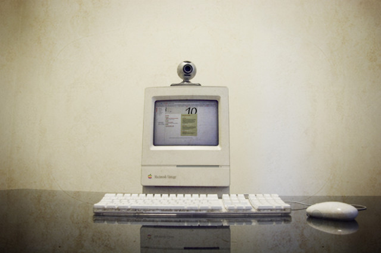

"Webcam" isn't necessarily an industry term, but if you're reading this, you generally know what we're talking about. Common webcams are those that are built into a laptop, or commercially available external devices connected via USB. Most software frameworks support these cameras through UVC - USB video device class - essentially a standard of communication. UVC can be thought of as being similar to how different keyboards and mice input devices are able to be universally recognized by most operating systems without needing to install specific drivers.
Webcams are great for basic applications and workspace testing, but aren't the gold standard for professional installations these days. Now that high quality cameras are built into almost every laptop, smartphone, and tablet, the market for standalone webcams has largely stagnated since the mid 2010's. There are only a handful of decent options in this space and there doesn't seem to be a lot of choice or competition that will shake up the market anytime soon.
A lot of the cameras out there are really made for livestreamers and boast features for things like built-in AI face detection for autofocus (something that you may or may not even be able to use in your software). At this point, the Logitech Brio 4K is probably the best option, and even that camera came out in 2017. At a quick glance, Logitech is basically the only name brand in the game at this point, other than a random mix of lesser known manufacturers.
Connection types: USB 3.0 and USB-C is most common connection you'll see, but there are still some USB 2.0 connections out there.
Max resolution range (typical): 320x240px to 4K. This value ranges a lot, and it depends on your application. There are only a handful of 4K webcams out there, but there are a lot more 720p60fps cameras on the market these days due to the adoption of USB 3.0. If you're working with an older camera, USB 2.0 often does not have enough bandwidth to send 30fps worth of 1080p without some artifacts. Some web cameras are also guilty of doing some software compression of the image before sending it through the hardware connection, and this can add some image degradation.
Webcam Pros:
Webcam Watchouts:
Range of effectiveness:
Varies by placement, lens and application. You could watch an entire room of people, but with very little precision. Seems to work best in a range of about 1ft-50ft (.3-16m). If you're too far back, it can be difficult to get an accurate or meaningful reading because people's bodies will be too small to the sensor in relation to other image noise, unless you're on a solid background.
Optimal environment for repeatability/reliability:
If image quality isn't too important, you need a full color image (for tracking colors, or recording people for a video clip/photo)
Ideally a controlled room with good artificial lighting will ensure this camera will react the same at any hour of the day. Natural lighting can cause issues depending on the amount of windows and time of year.
Most simple tracking methods with this camera will work best when the subject is on a plain solid background so it is easy for your software to pick out a person from other objects in the space. Background subtraction is suggested in a case like this.
Troublesome environments:
An environment with a lot of changing daylight or natural light can really impact this camera's ability to reliably and predictably track at all hours throughout the year.
Very little to light, rapidly changing or flashing lights, or subjects coming close and far can sometimes cause issues with their automatic adjustment algorithms.
Webcam Further reading (some of these links are for older systems):
Check out the differences between a UVC cam and a non UVC cam to get an idea about if you'll be able to manually control the camera from within your software. Check out UVC camera control for macOS here Focal Length Calculator Spreadsheet of different webcams and their capabilities for manual control on macOS Vidvox has a UVCKit app/framework that may allow you to control various settings of your MacOS cam via UVC